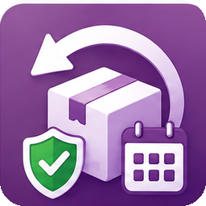
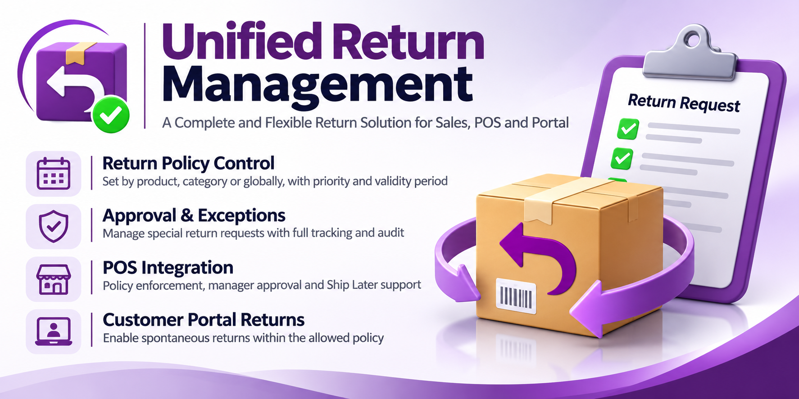
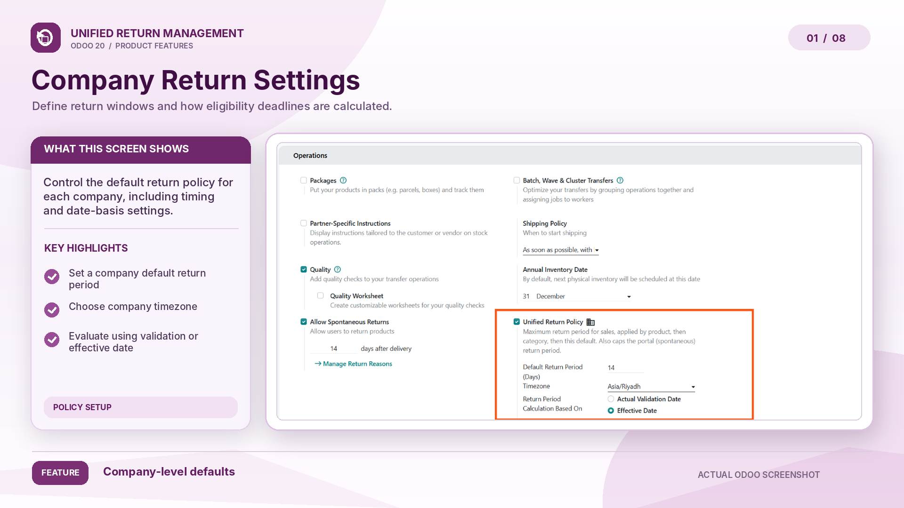
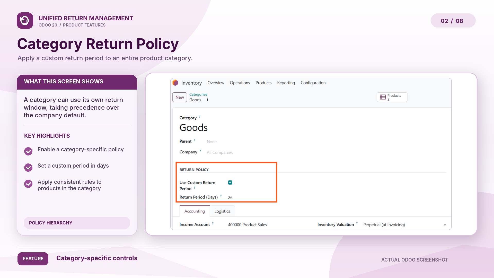
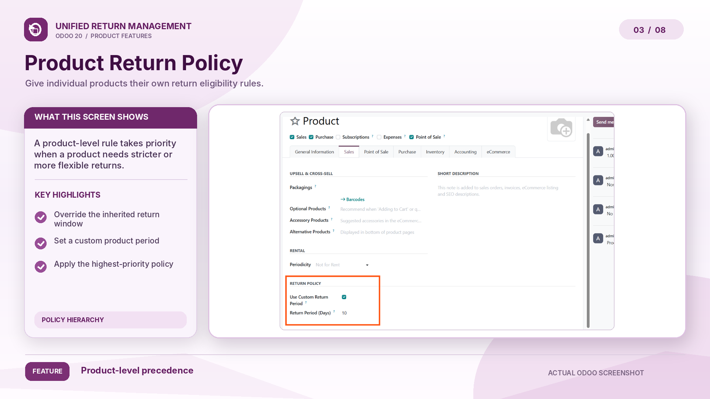
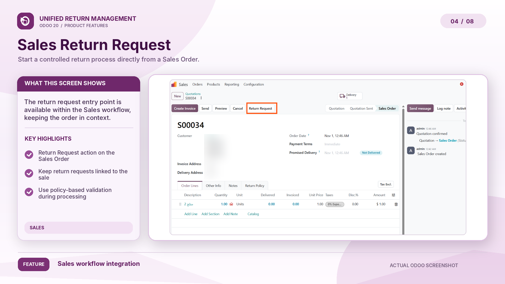
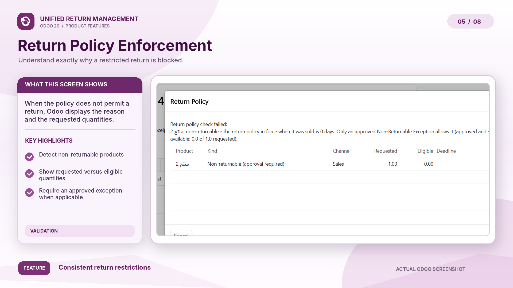
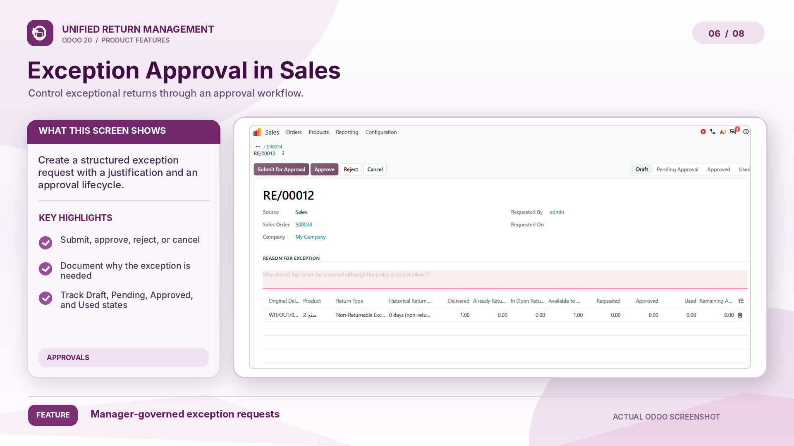
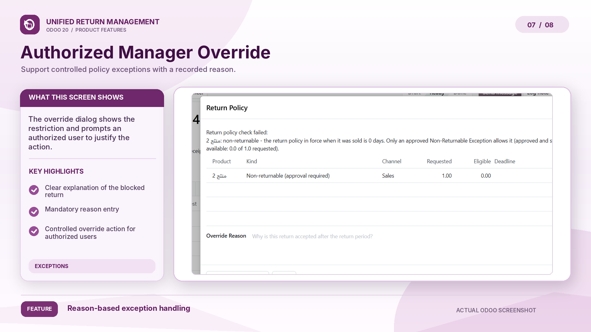
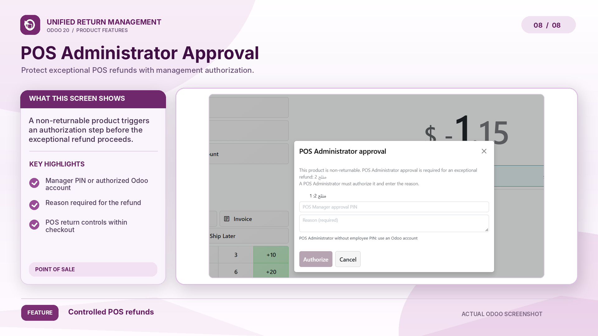

Advanced Return Policies, Controls & Approvals
Odoo 20 Sales Inventory returns Point of Sale Customer Portal Multi-company

Overview
In standard Odoo, returns can be created from Sales, Inventory, the Point of Sale and the Customer Portal, each with its own rules. Unified Return Management brings return management (RMA) to these flows: one return period per product, checked on the server, so late, excessive or duplicate returns are stopped and every exception is approved by the right manager, with a reason, in an audit trail.
📅
A return period in days per product, category or company, counted from the delivery in the company's time zone.
🛡
A return never exceeds what is still returnable, across Inventory returns, POS refunds and portal requests.
✅
Expired or non-returnable items need a Sales or POS manager's approval, with a mandatory reason.
📋
Policy changes, approvals and who approved what are recorded, and each company only sees its own records.
Policy configuration
The most specific value wins: a product period applies first, then its category, then the company default. Values are set per company, and 0 days means non-returnable: the product cannot be returned unless an exception is approved.
Product → Category → Company Default
✓ Time zone per company ✓ Count from the actual validation date or the effective date ✓ Policy frozen at the sale, never retroactive ✓ Every policy change logged
Tap or click a screenshot to open it at full size.



Sales return management
Return Requests from the sales order. Lines still within their period need no approval: the standard Return Transfer is created at once.
Checked where returns happen. The period and the returnable quantity are checked when a customer return is created, when a quantity is entered and when it is validated, for every user, administrators included.
Never more than what is left. Delivered minus returned minus other open returns: Return All is capped and a Still Returnable column guides the warehouse.
Order changes stay standard. A confirmed line can still be lowered down to the delivered quantity, as in standard Odoo.


Exception approval workflow
When a sales line is past its period or non-returnable, the request goes to a Sales Administrator. Approval and execution stay separate: approving never grants stock rights, and the Return Transfer is validated by an Inventory User when the goods arrive. A return blocked at validation can only be overridden by an administrator of the original sales channel, with a recorded reason.
1. Request
Lines, quantities and a reason, from the sales order.
2. Approve or reject
By a Sales Administrator, recorded with the approver.
3. Execute
The Inventory User receives the goods; approved quantities are used once.
4. Audit
Requested, approved, used and remaining quantities stay visible.


POS return controls
Refunds within the period go through as usual. Expired, non-returnable and standalone refunds (no original receipt) need a POS Administrator approval with a mandatory reason.

Customer portal
Customers request returns from their sales order in the portal, within the portal period capped by the product's policy. A request is not a stock movement.
Staff select the request a return line executes (Portal Request column). Only that request is consumed, with the quantity really received.
Returns done, open returns and open requests never exceed what was delivered. Cancel remaining never releases a quantity an open return is executing.
How it works
1
Inventory › Settings › Unified Return Policy: default period, time zone and calculation basis.
2
Set periods on categories and products; issue approval PINs to POS Managers.
3
The policy in force is frozen on each sale; the return period starts at delivery.
4
In-time returns go through; exceptions need a manager and a reason, and stay in the audit trail.
Requirements & scope
sale_stock, pos_stock and pos_hrThe module includes a README, an installation guide and a user guide: settings, rules per channel, approvals and operating procedures.
For questions or support, use the contact options of this app's page on Odoo Apps.